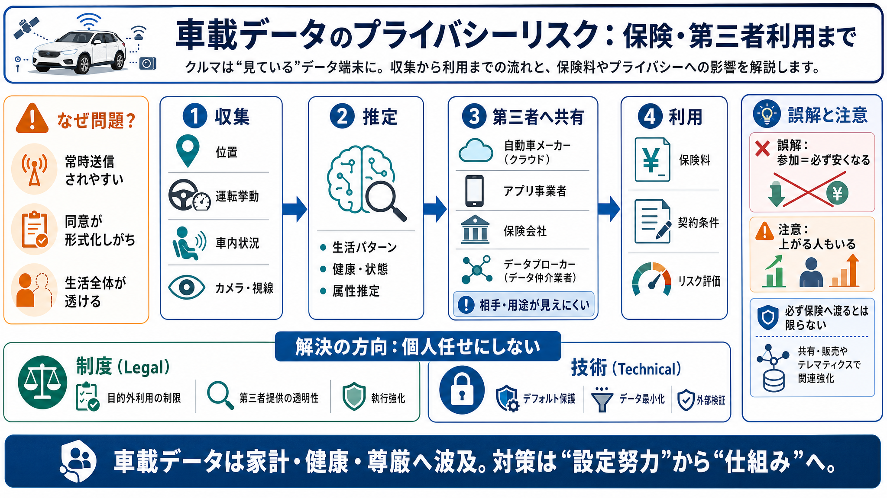

個人情報保護・プライバシー 2025年の振り返りと2026年の展望 ～米国編～ | 著書/論文 | 長島・大野・常松法律事務所
NO&T Data Protection Legal Update 個人情報保護・データプライバシーニュースレター. | **カリフォルニア州** | California Consumer Privacy Act（CCPA）、Califo…

NO&T Data Protection Legal Update 個人情報保護・データプライバシーニュースレター. | **カリフォルニア州** | California Consumer Privacy Act（CCPA）、Califo…
# Matomoユーザー会. ## カリフォルニアのデータプライバシー法の理解：2026年のCCPA. 今日の企業は、増え続ける複雑なプライバシー法の網に対応しなければなりません。コンプライアンスの問題はすべての顧客とのやり取りにおいて発生…
他方、連邦法レベルでは複数の法案が提出されているものの、未だ成立には至っていない。なお、連邦法案の内、顔認証技術を搭載したボディカメラの使用禁止
# 顔認証と個人情報保護 ～顔認証システムの活用に必要なプライバシー保護の知識、対応について解説【2026年最新版】. Share to Facebook Share to Twitter Share to LinkedIn. さま…
コネクテッドカーとは、ICT端末としての機能を有する自動車のことであり、車両の状態や周囲の. 道路状況などの様々なデータをセンサーにより取得し、